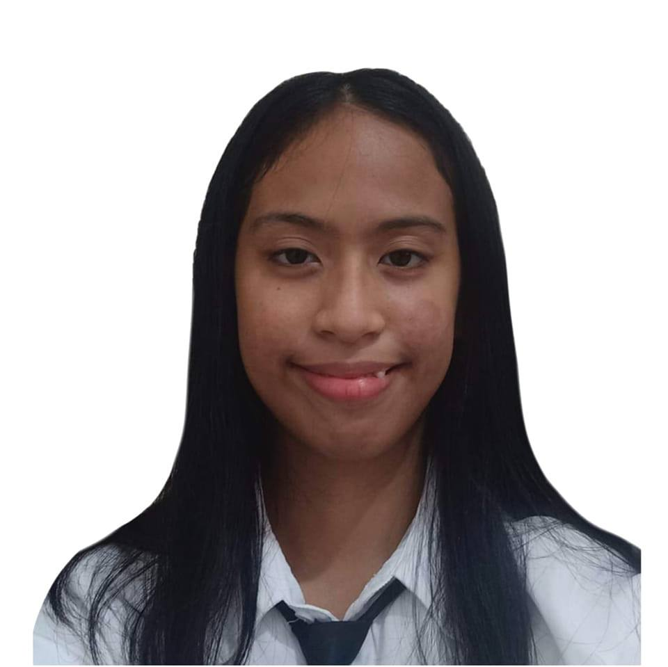

RESUME

Alyssa Camille Pascua
Caloocan City
sakoneko@gmail.com
I OBJECTIVES
- A charismatic individual with passion for creativity seeking for a long term position in a great orgranization
II PERSONAL INFORMATION
- Nickname: Alyssa
- Gender: Female
- Date of Birth: June 26, 2003
- Language: English and Tagalog
- Nationality: Filipino
- Religion: Iglesia Ni Cristo
III EDUCATIONAL ATTAINMENT
College
- Majored in Bachelor of Science Computer Science (2021 - current)
Senior High School
- Accountancy Business Management (2019 - 2021)
IV SKILLS
Computer Literate
- Microsoft Visual Studio,
- Microsoft Word,
- PowerPoint Presentations,
- Clip Studio Paint
- Ibis Paint
Leadership
- Empathetic Individual
- Emotionally Intelligent
- Sets Clear Healthy Boundaries
- Gentle Team Player
V EXPEREINCE
Programming
Art
- Illustrations (traditional and digital)
Being active in a community of passionate individuals, I was able to hone the basics of my skills in order to produce
content with intricate illustrations. Being able to see how our collaborative efforts were managed and executed is my favourite experience